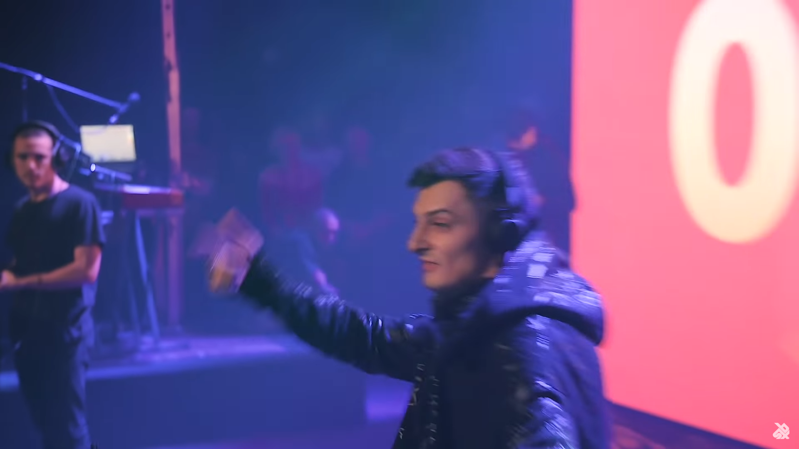

Base Dolphin
Solo Project


Base Dolphin is a 3D audio only shooter game where the player has to detect the location of targets by listening to the radar sounds, and aim and shoot them down. This game was a submission for the 'Game for Blind Gamers' Game Jam.
| Roles | Description |
|---|---|
| Program | Programmed for entire game using Unity engine. |
| Sounds | All the sound effects were made using various samples on fl studio. Sounds for announcements were made using sampled text-to-speech. |
| Other | Design. |
Assests used:
UI Accessibility Plugin: for UI navigation and Text-to-speech